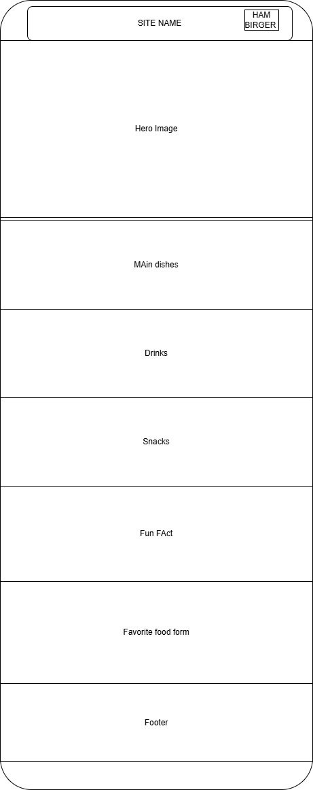
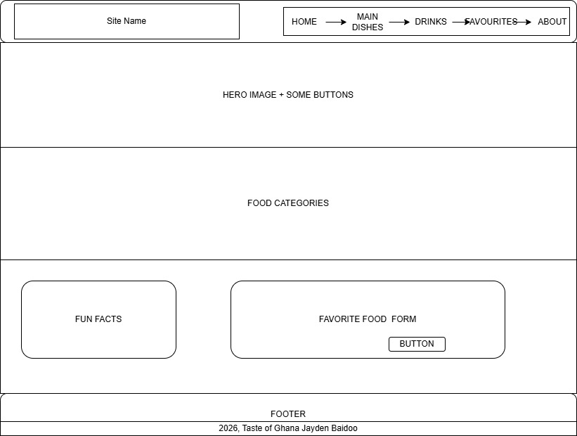

Site Name
Taste of Ghana
This name was chosen because it reflects the rich culture and variety of traditional Ghanaian foods. The website will help visitors discover popular dishes, drinks, and snacks from Ghana.
Site Purpose
The website will display well-known Ghanaian dishes, including their ingredients, cultural background, and brief preparation descriptions. It will include sections for main dishes, drinks, and snacks. Images, fun facts, and a form for users to share their favorite Ghanaian foods will also be included.
Scenarios
- What ingredients are used to prepare popular Ghanaian dishes such as Fufu and Jollof Rice?
- What are some popular traditional Ghanaian drinks and snacks?
- The Cultural significance of these foods in Ghanaian society?
- How can I share my favorite Ghanaian food with other visitors?
Color Schema
Used for headings, navigation, buttons.
Used for highlights, borders.
Used as the main page background.
Typography
Merriweather
Used for headings.
Open Sans
Used for body text and paragraphs.
Poppins
Used for navigation and buttons.
Wireframes
Mobile View

Desktop View
